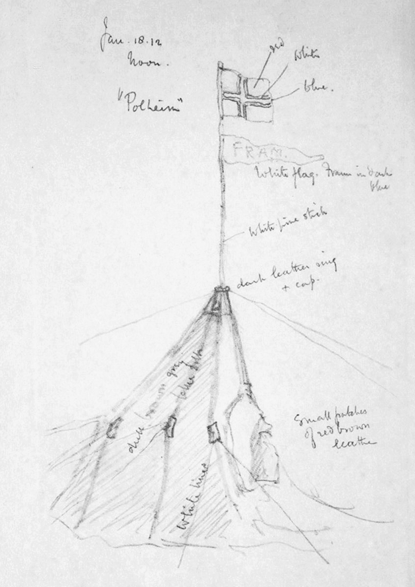

Chapter 22
The Documents Recovered from the Tent
On 12 November 1912, at latitude 79° 40’ S, eleven miles short of One Ton Depot, the sealed package lay on the table at Cape Evans, its contents still damp from the bodies that had warmed them. Back in that moment the tent still held its archive: three bodies in their sleeping bags, the canvas walls collapsed inward by drift, and the small cache of papers that Edward Atkinson’s search party must now handle. The contrast was absolute. Outside, the Barrier stretched flat and white to every horizon. Inside, the men worked with the deliberate movements of those who understood that every touch would be examined later, that the order of their actions would create the first archive of the disaster.
Tryggve Gran, the Norwegian ski champion who had joined the expedition at Madeira, recorded what he saw when he entered. Scott lay in the center, half out of his bag, his left arm extended toward Wilson. Wilson was to his left, his body composed as if in sleep. Bowers lay to the right, his position suggesting he had been the last to die. The three had remained in their sleeping bags for a day and a half under thickening drift. Bowers had sung to pass the time. The others joined in when they could hear him over the wind, occasionally kicking each other through their bags to confirm they were still alive. When the wind subsided, the cold had finished what the storm had held in abeyance.
But the bodies were not the only witnesses. The tent contained Scott’s final journal, Wilson’s diary, Bowers’s diary, letters to wives and mothers, the exposed photographic film from the polar plateau, and the thirty-five pounds of geological specimens they had dragged to their deaths. These items would travel north to Cape Evans, then to New Zealand, then to London. They would outlast every man who had touched them. The search party understood this. Their handling of the documents in the next hours constituted the first act of historical interpretation.
Atkinson made the decisions. As senior officer present, he determined the order of recovery. The diaries came first. Scott’s journal, bound in leather, lay beside him where he had written his final entry on or soon after 29 March. The pages were damp from condensation and breath-frost, the ink in places blurred where moisture had touched it. Wilson’s diary, smaller, more methodically kept, sat in a case near his head. Bowers’s record, written on loose sheets as well as in a bound book, required the most careful gathering—his habit of writing on whatever paper came to hand, his compact hand covering every margin, meant that individual pages might have shifted during the months since death.
Cherry-Garrard, who had been part of the original depot-laying party that failed to meet Scott in March, watched Atkinson’s hands as he opened Scott’s journal. The final entry was legible despite the conditions. The message asked that someone look after their people. The sentence would be quoted, debated, parsed for meaning in the years to come. But in the tent, it was simply read, noted, and passed among the living. Atkinson decided immediately that this document, like certain letters, would be sealed for transport to Scott’s widow. The expedition’s official account would have to wait. The families would learn first.
The physical fragility of the materials governed every action. Frozen ink becomes brittle; warmed too quickly, it runs. Paper that has cycled through months of Antarctic cold and occasional tent-moisture will tear along unexpected grain-lines. Atkinson directed that the diaries be packed against his own body for the return journey, the warmth of living flesh the only available means of stabilizing them for transport. The letters to Oates’s mother, to Bowers’s sister, to Wilson’s wife were inventoried by name, by addressee, by apparent date of composition. Some were complete. Others broke off mid-sentence, the writer’s strength or time exhausted.
The photographic film presented a separate problem. Scott had carried plates from the polar plateau, images of the Beardmore Glacier descent, of the march to the pole, of the Norwegian flag they had found there. The film had been exposed to temperatures below minus 40 degrees, to the condensation of tent-life, to months of burial under snow. Whether any image remained recoverable was unknowable in the field. Atkinson packed it with the same care as the diaries, but with less hope. The geological specimens from the Buckley Glacier, from Mount Darwin, from the plateau itself weighed more than any single man could comfortably haul. Yet they had been dragged those final miles when every ounce might have meant survival. The search party would bring them out. The science would be completed, if the rocks survived the journey.
The inventory was not neutral. The order in which materials were found and packed established a hierarchy of evidence. Scott’s journal, opened first, became the primary narrative. Wilson’s meteorological notes, discovered in a separate case, provided the quantitative record: temperatures, wind speeds, barometric readings from the final weeks. Bowers’s diary, with its compact account of daily distances and ration consumption, supplied the logistical data. Together they would permit reconstruction of the march: the 400 miles from the pole to the top of the Beardmore, the 120 miles down the glacier, the final 150 miles on the Barrier where the system failed.
The search party’s report, composed by Atkinson at Cape Evans in the weeks following, would note specific details that later accounts would amplify or question. The state of the sledge, found outside the tent, loaded with gear no longer needed. The quantity of oil remaining, critical, since the fuel shortage had forced cold camping and inefficient cooking in the final weeks. The arrangement of the bodies, suggesting that Wilson had died before Scott, that Scott had continued writing after Wilson’s death, that Bowers had been conscious longest of all. Each observation became a datum for the reconstruction.

But the report also recorded absences. Oates’s body was not in the tent. His sleeping bag, his boots, his position in the narrative—all ended at the point where he had walked out on 17 March, his thirty-second birthday, leaving the message that he might be some time. The search party erected a cairn and cross where he was presumed to have died, bearing an inscription composed by Cherry-Garrard that noted the death of a very gallant gentleman in that approximate location. The cairn marked a gap in the evidence. Oates’s final days existed only in the others’ accounts.
The handling of the documents created the first filter through which the disaster would be understood. Atkinson’s decision to seal certain letters, to read others aloud to the party for immediate information, to prioritize the official journal over private correspondence: these choices shaped what would be known and when. The families would receive their husbands’ and sons’ final words before the public learned of the march’s outcome. The scientific community would receive the meteorological data before the newspapers received the human story. This sequencing was deliberate, institutional, British.
The return journey began on 13 November. Atkinson led, with Scott’s journal against his chest. Cherry-Garrard followed, carrying Wilson’s diary and the film. The others distributed the geological specimens, the letters, the remaining personal effects. They traveled light and fast, the sledge that had carried their search supplies now loaded with the expedition’s archive. The eleven miles to One Ton Depot took hours in the soft snow, the drift that had buried the tent now impeding their exit. At the depot they paused to record their find: the depot untouched, the oil tins full, the supplies that might have saved the polar party still waiting for users who would never come.
The march to Cape Evans covered 150 miles. Each night the diaries were warmed against living bodies, the condensation from the day’s travel carefully wiped from their covers. The cold preserved what it had damaged; the documents would survive, but altered. Ink that had run could not be un-run. Pages that had frozen together could be separated, but not without loss. The archive that reached Cape Evans on 15 November was the only possible archive, contingent on the conditions of its preservation and the judgments of its recoverers.
At Cape Evans, the remaining expedition members had waited through the winter, continuing their scientific work. In the spring Atkinson had faced a choice: whether to direct efforts first to the rescue of Campbell’s Northern Party, marooned at Evans Coves since the previous autumn, or to establish the fate of the polar party. A meeting of the whole group decided they should first search for signs of Scott.
The party set out on 29 October, accompanied by a team of mules that had been landed from Terra Nova during its resupply visit the previous summer.
The documents Atkinson brought back confirmed the wisdom of that sequence, Campbell’s men would later be found alive, Scott’s dead, but also its cost.
The polar party had died in March. A search party sent from base in March 1912 had been driven back from One Ton Depot by the weather, and it was recognized that there was no chance of Scott’s party surviving the winter. Nothing further could be attempted until October. The timing was fixed by Antarctic seasons, not by human choice.
The preliminary examination of the documents at Cape Evans established procedures that would govern their subsequent handling. Atkinson read Scott’s journal in full, then Wilson’s, then Bowers’s, cross-referencing dates and distances against the depot ledgers and the meteorological records kept at base. The discrepancies were minor. Bowers’s distances sometimes varied from Scott’s by a mile or two, his temperatures recorded at different times of day. But the agreement on essentials was complete. The party had reached the pole on 17 January. They had found Amundsen’s tent, the Norwegian flag, the letter to the King of Norway that Scott had been asked to forward. The return march had begun with inadequate fuel, with Evans already failing, with the ponies dead and the dogs gone north with Meares.
The letters required separate treatment. Scott’s message to his wife, written when he knew himself to be dying, balanced personal farewell with expedition business: the promotion of his companions, the disposition of his effects, the care of the dependents. Wilson’s letter to his wife, composed in the same circumstances, emphasized scientific duty and religious acceptance. Bowers, unmarried, wrote to his sister and to his mother, his tone characteristically practical even in extremity. Atkinson sealed each for transport, noting in his report that the private letters were of a most touching nature and would be forwarded to the relatives unopened.
The film was examined by Ponting, the expedition’s photographer, with qualified optimism. Some plates had survived the cold; others showed signs of chemical damage. The geological specimens were logged against the collection notes Bowers had maintained, confirming their provenance from specific locations on the plateau and glacier. The sledge meter, which recorded distance traveled, was read against the diary entries: 299 miles from the pole to the top of the Beardmore, 125 miles down the glacier, 380 miles on the Barrier to the final camp. The arithmetic of failure.
The documents also contained evidence of the decisions that had created the fragility. Scott’s journal recorded the choice to continue man-hauling after the motor sledges failed, after the ponies died, after the dogs were sent back. It recorded the calculation that four men could pull a sledge loaded with geological specimens 150 miles across the Barrier. It recorded the daily ration reductions as supplies dwindled, the gradual recognition that the depot-laying in February 1912 had been inadequate, the hope that the March search party might meet them that proved unfounded. Each entry was a decision point, visible in retrospect as a node in the cascade.
Wilson’s diary, kept with scientific discipline even as his own body failed, provided the quantitative correlate. Temperatures below minus 40 degrees for days at a time. Wind speeds that reduced progress to two or three miles per day. The caloric deficit that clinical experience would later identify as fatal: the body consuming its own tissue to maintain core temperature, the mind remaining clear until the final collapse. His medical training had let him measure his own decline with precision.
Bowers’s record, the most compressed, supplied the operational detail. The weights carried at each stage. The distribution of loads among the five men, then four, then three. The oil consumption, measured against the allowance that had proved insufficient. His final entries, written after Oates’s departure and Evans’s death, maintained the same format: date, distance, weather, remarks. The format outlasted its utility. The remarks became shorter, then stopped.
The search party’s recovery of these documents established the evidentiary foundation for all subsequent understanding. Every later account, Cherry-Garrard’s The Worst Journey in the World, Scott’s own journals as published by his widow, the official expedition reports, the hundred years of historical analysis, depended on what Atkinson’s party found, read, packed, and carried north. The documents were not merely sources. They were the disaster itself, rendered in handwriting that grew weaker as the bodies grew weaker, in ink that froze and thawed and ran, in pages that survived their authors by months and their authors’ cause by decades.
At Cape Evans, the sealed package of documents became the expedition’s most precious cargo. The Terra Nova, when it returned in February 1913, would carry them to New Zealand, where the news would be released to a waiting world. The bodies would remain on the Barrier, the tent collapsed over them, the snow cairn and cross marking the site. The archive would travel, and with it the burden of what to say and to whom.
The men who had handled the documents in the tent, Atkinson, Cherry-Garrard, Gran, the others, would carry the memory of that handling for the rest of their lives. They had been the first readers of Scott’s final words, the first to see the Norwegian flag in its photographic record, the first to understand from primary evidence exactly how the polar party had died. This knowledge separated them from the rest of the expedition, from the world that would learn of the disaster through newspapers and official statements. They had touched the original pages. They had warmed the damp paper against their bodies. They had decided what to seal and what to read, what to carry and what to leave, who should know first and what should be told.
The package was ready for transport. The diaries, the letters, the film, the specimens, all accounted for, all stabilized as far as field conditions permitted. The Terra Nova was still months away. Until then, the documents would wait at Cape Evans, their contents known to a handful of men who had become, without preparation or choice, the expedition’s first historians. The evidence was secure. The interpretation would begin.